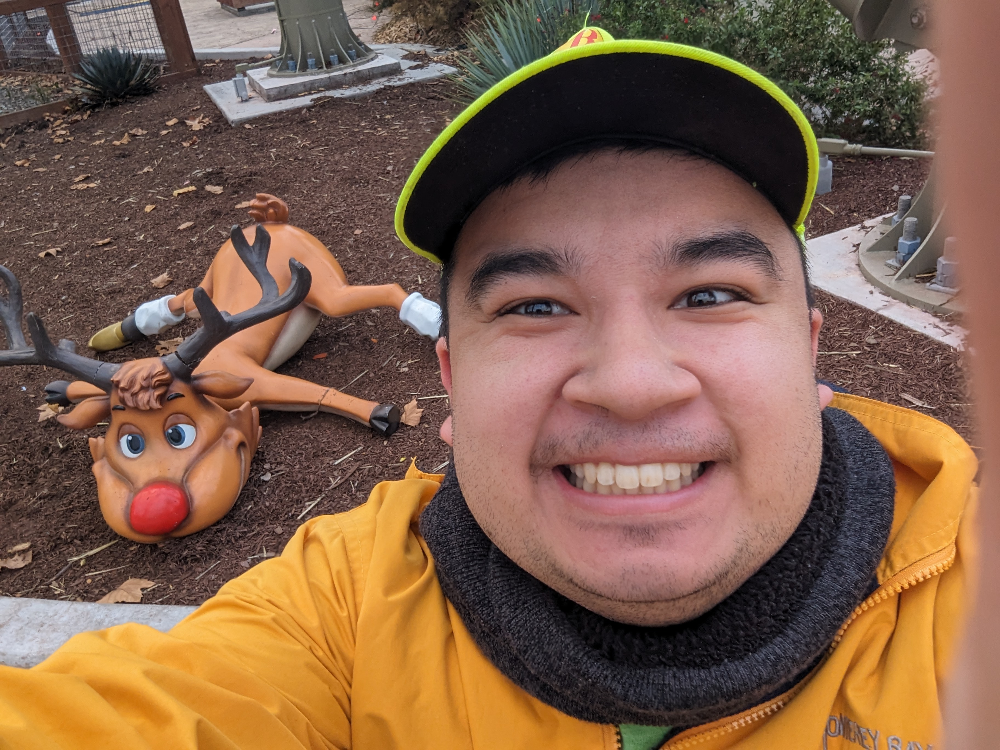
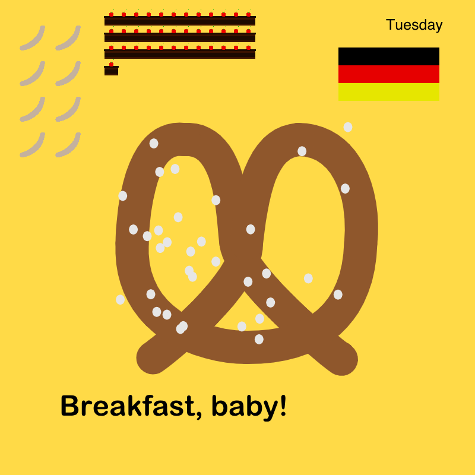
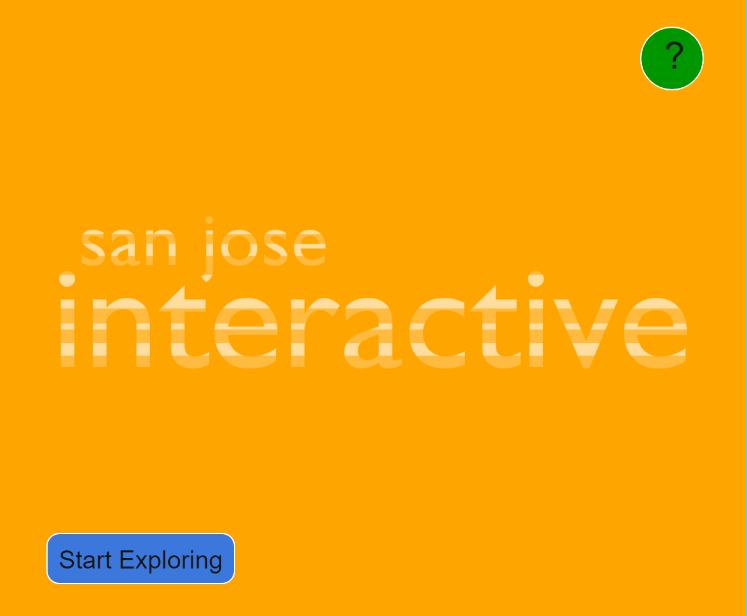

Frank Ko Sharma
"Out of the mountain of despair, a stone of hope." - Martin Luther King Jr.
Meet the Artist!
Hello! I'm Frank! Originally started school here in 2019 as an Animation/Illustration student. In Fall 2022, I changed my major to BA Design Studies, still with a concentration in Animation/Illustration. While I'm taking ART 101 as an elective here at SJSU, I mostly like to draw and animate by hand, in a digital medium. I'm here just to add on to my experiences as well as expanding my resume to other companies I apply for. I am also set to graduate this semester in Spring of 2024, but would like jobs in the art and animation industry in the future as a career path.
Project 1
A simulated drawing program with custom made brushes.

Project 2
A 25-30 second animation of a black and white spirograph algorithm.

Project 3
A visual clock based on my everyday life.

Final Project
A simple interactive historical museum based on the history of San Jose's culture.
